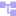
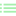

Two lessons ago, an FSM solved decision trees' memory problem by giving each mode its own persistent, script-sized chunk of behavior. That solves memory, but it introduces a new problem of its own: every state needs to know, explicitly, which other states it might transition to. Four or five states is fine. Fifteen states, each with two or three possible transitions to other named states, gets tangled fast, informally called "transition spaghetti." A behavior tree (BT) is a different answer to the same original problem, one built to stay organized as it grows.
Instead of one state being "active," a behavior tree is a fixed hierarchy of nodes, and every frame the root is ticked. A tick is a function call that flows down through the tree and returns exactly one of three answers back up:
SUCCESS and FAILURE mean exactly what they sound like: this node's job is done, either it worked or it didn't. RUNNING means "still in progress, ask me again next frame" (moving toward a target takes more than one frame; it returns RUNNING on every frame it hasn't arrived yet). Every single node type in a behavior tree, no matter what it does internally, boils down to producing one of these three answers when ticked. That uniform interface is what lets nodes nest inside each other without needing to know anything about what's inside their children.


Every leaf node (no children of its own) is either an Action or a Condition. The only difference between them is what they default to before you override tick(), a small but deliberate detail:
An Action assumes success unless something goes wrong; a Condition assumes failure unless it can prove otherwise. Here's a real condition from the demo project, one that checks the in-game clock:
A leaf can only ever answer for itself. A composite node has multiple children and combines their answers into one of its own. This project has two:
A Sequencer ticks its children left to right and stops the instant one doesn't SUCCESS: a failure or a still-running child short-circuits the whole thing, passing that same result straight up. Only if every child succeeds does the Sequencer itself report SUCCESS. Read it as "and": do this, and this, and this, all the way through, or bail out the moment one fails.
A Selector is the opposite: it ticks its children left to right and stops the instant one doesn't FAILURE. Read it as "or": try this, or this, or this, taking the first option that isn't a dead end, only reporting FAILURE itself if every single child did. Order matters a lot here: children earlier in the list get first refusal.
This is the actual behavior tree driving the day/night creature in the demo above, exactly as it's built in the scene tree (no code beyond what's already shown, just how the nodes are nested):
Read it top to bottom: the root Selector tries the left Sequencer first. If it's daytime and grass is found and the creature successfully starts moving toward it, that whole Sequencer reports success (or RUNNING while still en route), the Selector stops there, and the right branch never even gets ticked this frame. Only if the left Sequencer fails, which happens the instant "Check daylight" fails at night, does the Selector move on and try the shelter branch instead.
Notice there's no explicit "go to shelter" state anywhere, and nothing that looks like a transition. The tree's shape encodes the priority (try grass first, shelter second) once, structurally, rather than as a rule living inside some other state.
Before moving on, make sure you can: